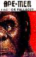

Bewertung: Affen-Menschen: Fakt oder Fiktion?
Ape-Men: Fact or Fallacy? von Malcolm Bowden, Sovereign Publications, Bromley, Kent (2. Auflage, 1981)Von Professor John Sheets rezensiert
Diese Rezension wurde ursprünglich im Buch Reviews of Creationist Books veröffentlicht, herausgegeben von Liz Rank Hughes (2. Auflage, 1992), veröffentlicht vom National Center for Science Education.
Sie wird hier mit Genehmigung des National Center for Science Education neu veröffentlicht.

Ape-Men: Fact or Fallacy? wurde verfasst, um Zweifel an der evolutionären Interpretation des Fossilberichts des Menschen zu wecken. Der Autor, M. Bowden, verwendet zwei Ansätze: 1) Infragestellung der fossilen Belege und 2) Infragestellung der Ehrlichkeit menschlicher Paläontologen.
Fragen zur Evidenz
Bowden beschreibt oder illustriert die Fossilien für den Leser kaum. Er gibt keine ausreichende Referenz, wie Oakley (6), wo der Leser weitere Informationen erhalten könnte. Diese unglücklichen Auslassungen mindern den Wert des Buches erheblich. Dennoch behauptet Bowden, dass "das Urteil des Laien in dieser "Darstellung aller relevanten Evidenz" (S. 1) ebenso gültig sein kann wie das des Experten" – vergleichbar mit der Annahme, dass jeder Autobesitzer den Verbrennungsmotor erklären kann.
Bowden stellt fest, dass „der Neandertaler eine entartete Form des existierenden Homo sapiens war, die an Mangelernährung und Rachitis litt und möglicherweise promiskuitiv lebte" (S. 173). Diese unbegründete Behauptung ignoriert die Standardpublikation über den Neandertaler von C.L. Brace (1) und bleibt angesichts der erneuten Debatte über den Neandertaler (8) ablehnend.
Bowden behauptet, dass Australopithecus "nicht aufrecht ging" (S. 176). Er stellt die Beschreibung des Fossilienkniegelenks durch D.C. Johanson und M. Taieb (4) in der Hadar-Region von Äthiopien in Frage. Bowden besteht darauf: "Ich konnte in der gedruckten Literatur keinen Beweis finden, der zeigt, dass sein Kniegelenk auf zwei Beinen ging" (S. 220). Doch das Papier von Johanson und Taieb führt bekannte biomechanische Forschung an, die zeigt, dass das Fossilienknie einem modernen Knie entspricht (3,5). Der Fehler des Autors in den Fakten illustriert seine Tendenz, Beweise zu ignorieren oder zu verzerren, die seine Sichtweise nicht unterstützen.
Fragen der Ehrlichkeit
Bowden glaubt, dass menschliche Paläontologen verschwören, um die "Wahrheit des Kreationismus" zu verbergen. Er zeigt kein Verständnis für die selbstkorrigierende Natur wissenschaftlicher Arbeit, die regelmäßig dazu führt, dass Wissenschaftler die Fehler anderer Wissenschaftler aufdecken. Ein hervorragendes Beispiel für dieses Verfahren ist der berühmte Piltdown-Betrug. Bowden zitiert den Vorfall, um Verdacht gegen menschliche Paläontologen zu erwecken. Er könnte ebenso gut behaupten, dass die moderne Medizin verdächtig sei, weil Ärzte früher "Aderlass durch Blutegel" verschrieben, um Krankheiten zu heilen. Tatsächlich wurde der Piltdown-Betrug von Paläontologen aufgedeckt, was zeigt, dass Verschwörungen und Fehler in der Wissenschaft nicht ewig verborgen bleiben können.
Bowden erhebt weitere falsche Vorwürfe. Auf Seite 244 wirft er Wissenschaftlern vor, mit Journalisten zusammenzuarbeiten, um Dissidenten harte Behandlung zuzufügen; auf der nächsten Seite wirft er Paläontologen vor, „Beweise verwendet zu haben, die absichtlich missverstanden wurden." Er wirft Eugene Dubois vor, Informationen über die Schädel des „Java-Menschen" zurückgehalten zu haben (S. 141–142), und wirft Marcellin Boule vor, „nicht überzeugt gewesen zu sein, dass Sinanthropus etwas anderes als ein Affe war" (S. 105).
Allerdings zeigt eine wissenschaftliche Überprüfung (2) der Arbeit dieser Autoren die Unwahrheit der Vorwürfe. Bowdens anhaltende Angriffe auf Pater Pierre Tielhard de Chardin machen fast 40% des Buches aus (S. 3-55, 90-137)! Persönliche Angriffe und Racheakte sind kein Material für wissenschaftliche Diskussionen. Dieses Buch ist typisch für die kreationistische Art der Wissenschaft. Es bietet keine neuen Fakten, sondern bestreitet nur die Arbeit anderer, greift Wissenschaftler persönlich an und unterstützt die irrationale Ansicht, dass Verschwörungen überall in der Wissenschaft zu finden sind. Das Buch endet mit bekannten Apologetik-Argumenten und dem künstlichen Dualismus (7) des modernen Kreationismus. Im Gegensatz zu Wissenschaftlern beantworten die Kreationisten nicht nur alle heutigen Fragen, sondern sie kennen bereits die Antworten auf alle zukünftigen Fragen.
In seiner groben Verzerrung der Natur wissenschaftlicher Diskussionen leistet Bowdens Buch einen Dienstverfall für eine gute naturwissenschaftliche Bildung. Es verdient keinen Platz in einem modernen naturwissenschaftlichen Unterricht, wo das Verständnis der Natur des wissenschaftlichen Unterfangens weitaus wichtiger ist als das Absorbieren jeglichen spezifischen Fachinhalts.
Referenzen
1. Brace, C. L. 1964. "The fate of the 'Classic' Neanderthals: a consideration of hominid catastrophism!' Current Anthropology 5:343.2. --- 1982. Text der Debatte: „Kreationismus versus Evolution". Hill Auditorium, University of Michigan, Ann Arbor. 17. März 1982.
3. Heiple, K.G., und C. O. Lovejoy 1971. „Die distale Femur-Anatomie von Australopithecus." American Journal of Physical Anthropology 35:75-84.
4. Johanson, D. C., und M. Taieb 1976. „Plio-pleistozäne Hominid-Funde in Hadar, Äthiopien." Nature 260:293-297.
5. Kern, H.M., und W.L. Straus 1949. "Das Femur von Plesianthropus transvaalensis." American Journal of Physical Anthropology 7:53-77.
6. Oakley, K. P., B. G. Campbell, und T. I. Molleson, Hrsg. 1977. Catalogue of Fossil Hominids, 2. Aufl., 3 Bände. Trustees of the British Museum (Natural History), London.
7. Overton, W. R. 1982. "Kreationismus in Schulen: das Urteil in McLean gegen die Arkansas School Board of Education." Science 215:934-943.
8. Stringer, C. B. und P. Andrews 1988. „Genetische und fossile Belege für den Ursprung des modernen Menschen." Science 239:1263-1268.
John W. Sheets
Professor für Anthropologie und Museumsdirektor
Central Missouri State University
Warrensburg, MO 64093
Diese Seite ist Teil der FAQ zu fossilen Menschenaffen im TalkOrigins-Archiv.
Startseite |
Arten |
Fossilien |
Kreationismus |
Lektüre |
Referenzen
Illustrationen |
Neuigkeiten |
Feedback |
Suche |
Links |
Fiktion
http://www.talkorigins.org/faqs/homs/sheets.html, 05/31/2001
Copyright © Jim Foley
|| E-Mail mir